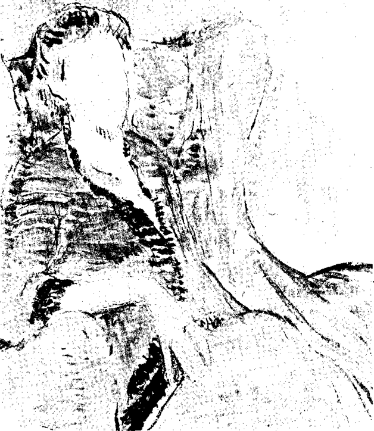
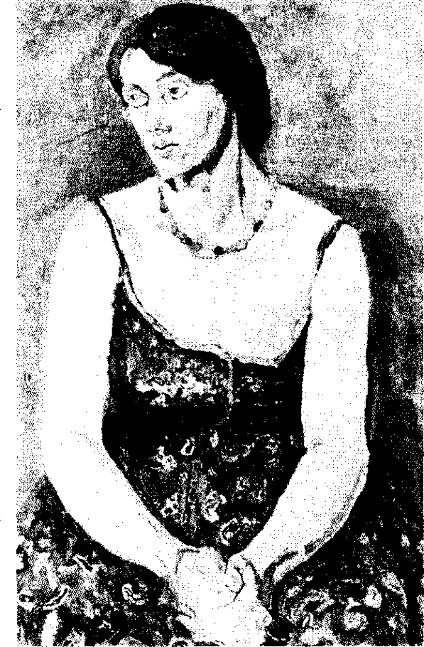

Bölüm 10
Night and Day
Virginia Woolf’un ablası Vanessa Bell’e adadığı Night and Day, 1919’da yayınlandı. Yazarın ikinci kitabı, adını 25’inci bölümdeki bir parçadan almış olabilir. Bu bölümde romanın baş kişisi Katharine Hilberry, bir insanın düşüncesiyle davranışı arasında, kişisel yaşamıyla toplumsal yaşamı arasında büyük bir ayrım, derin bir uçurum olduğunu düşünür. Uçurumun bir kenarında, insanın ruhu, canlı ve tam gün ışığındadır; öteki kenarında ise “gece kadar karanlıktır” (“dark as night”). Katharine, temelli bir değişime uğramadan, insanın bu uçurumu aşmasının, geceden gündüze geçmesinin yolu var mıdır acaba diye sorar kendi kendine. Yazarın romanına “Gece ve Gündüz” adını uygun bulmasının nedeni, ilk romandaki Rachel Vinrace gibi, Katharine’in de kendi karanlık iç dünyasından ayrılıp, dış dünyanın aydınlığına kavuşmak istemesidir belki de.
Leonard Woolf, eşinin ilk iki romanını, onun “ölü” (dead”) yapıtları arasına koyar, Three Guineas ve çok daha sonra yazdığı The Years ile birlikte. Ama yazarın kendisi, 1919 güncesinde, ikinci romanını birincisinden daha çok beğenir; daha derin, daha olgun ve daha az kusurlu bulduğunu söyler. Virginia Woolf’un yakın arkadaşı, büyük romancı E.M.Forster ise, The Voyage Out’u “a strange tragic novel” (garip trajik bir roman) sayarken, Night and Day’i hiç tutmaz. Burada yazarın, “Mr. Bennett and Mrs. Brown” adlı denemesinde alaya aldığı ve iki yüzyıldır İngiliz romanına egemen olan gerçekçiliğin, olumlu ya da olumsuz bütün kurallarına uyduğunu; bu yüzden de, kitabına ikinci planda kalan kişiler eklediğini; gülmece öğelerine başvurduğunu; anlatımının da sıradan olduğunu ileri sürer. E.M. Forster haksızlık etmektedir aslında. Virginia Woolf’un kendine özgü yöntemi henüz bulamadığı, geleneksel gerçekçi romanın kalıplarından henüz sıyrılamadığı hiç kuşku götürmez. Üstelik Night and Day fazlasıyla uzundur. Beş yüz sayfa olacağına, olgunluk döneminin romanları gibi çok daha kısa olsaydı, bu kusurlardan büyük ölçüde arınabilirdi belki de. Ne var ki, Night and Day, yöntem açısından bir yenilik içermemesine karşın, The Years’den farklı olarak, ilgiyle okunur.
Bir başka dostu, eşsiz öyküler yazan Katherine Mansfield, çok daha acımasız bir eleştiride bulunmuş; Night and Day’i Jane Austen’in romanlarına benzeterek, Virginia Woolf’un fena halde bozulmasına neden olmuştu. Gerçi Jane Austen çok büyük bir romancıdır; ama Virginia Woolf’un ona öykünmeye hiç mi hiç niyeti yoktu. Oysa Night and Day’de, bir toplumsal komedya havası gerçekten vardır bir bakıma. Yüksek sınıfın çaylarına, yemeklerine, toplantılarına yer verilir. Bir genç kızla bir delikanlı, nişanlarını gizlice bozarak, yeni eşler bulurlar kendilerine. Gelgelelim, kimi olaylar ve toplumsal çevre Jane Austen’i anımsattığı halde, Night and Day’de -ki başlıca kişilerin psikolojik yapıları da, davranışları da, Jane Austen’in kişilerininkilerine hiç mi hiç benzemez. Örneğin, Jane Austen’in romanlarında hiçbir genç kız, gece yarıları Londra sokaklarına düşüp, sevgilisini aramaz; onu bulduktan sonra da bir yandan aşkını açığa vururken, bir yandan da, onunla aslâ evlenmeyeceğini söylemez. Hiçbir kız, Katharine gibi, “it’s life that matters, nothing but life... The process of discovery, the everlasting process” (önemli olan yaşamdır, sadece yaşam... Keşfetme süreci, o sonsuz süreç) diye konuşmaz ya da odasına kapanıp, matematik ve astronomi öğrenmek için gizlice çalışmaz. Hiç kimse, kış akşamları, bedenler alacakaranlıkta nerdeyse görülmezken, alçak sesle konuşanların seslerin-deki güzelliğin ve içtenliğin üstünde durmaz. Hiç kimse, rüzgârlı bir gece Londra sokaklarında yürürken Ralph Denham’ın duyduklarını duymaz:
“An odd image came to his mind of a lighthouse besieged by the flying bodies of lost birds who were dashed senseless by the gale against the glass. He had a strange sensation that he was both lighthouse and bird; he was steadfast and brilliant; and at the same time he was whirled senseless against the glass.”
(Acayip bir imge geldi aklına; yitik kuşların bedenlerinin kuşattığı bir deniz feneri gördü. Fırtına, kuşları fenerin camlarına çarpıyor, sersemletiyordu. Kendisi, hem o deniz feneri hem de kuşlarmış gibi, garip bir duyguya kapıldı. Deniz feneri gibi sağlam, ışıl ışıldı; kuşlar gibi de havada fırıl fırıl dönüyor, fenerin camlarına çarpıp sersemliyordu.)
Tüm geleneksel romanlarda olduğu gibi, Night and Day’de de belirli bir olay örgüsü, özetlenebilecek bir öykü vardır. Ve işin tuhaf tarafı şudur ki, “Acaba şimdi ne olacak? Katharine, William Rodney ile mi, yoksa Ralph Denham ile mi evlenecek? Yoksa Ralph Denham, Mary Datchet ile mi evlenecek? Mutlu bir sona varılacak mı?” diyerek, sonuna kadar merakla okuruz bu upuzun romanı.
Night and Day, ikisi kadın, ikisi erkek, dört kişinin ilişkileri üstüne kuruludur. Romanın baş kişisi Katharine Hilberry, yüksek sınıftan kültürlü bir ailenin tek kızıdır. Hilberry’lerin Chelsea’deki evi, tanınmış yazarlarla dolup taşar. Konuk gelmediği günler bile, anne, baba ve kızları, akşam yemeğine kılık değiştirmeden oturmazlar. Yatmadan önce, Katharine, annesiyle babasına yüksek sesle birkaç sayfa okur önemli bir kitaptan. Victoria Çağı romanlarından bir sahne gibidir bu. Virginia Woolf, beğenmediği gerçekçi romancıların yöntemine uyarak, kendi aile çevresine benzediği için yakından bildiği bu çevreyi, anneleri, babaları, dayıları, amcaları, teyzeleri, halalarıyla birlikte; taşlamaya kaçmadan, ama güldürücü yanların üstünde durarak, bize ayrıntılı bir biçimde anlatır. Katharine’in annesinin babası, Victoria Çağı’nın en ünlü şairlerinden biri olan Richard Alardyce’dır. Çoktan ölen bu adam, ilginç bir kişiye benzer: Bir ara eşini terk etmiş, uygunsuz kadınlarla aşk hayatı yaşamış, kendini içkiye vermiştir. Kızı Mrs. Hilberry, sarhoş şairlerin uğradığı meyhanelerde, babasının kucağında oturduğunu hâlâ anımsar. Ama şair, daha sonraları uslanmış; Victoria Çağı’nın erdemli bir temsilcisi durumuna gelmiştir. Öyle olunca da, Virginia Woolf’un alay ederek belirttiği gibi, esin kaynakları tümüyle tükenmiştir. Richard Alardyce’ın çalışma odasında, kitapları, el yazmaları, gözlükleri, piposu, terlikleri korunur. Evin kızı olarak Katharine’in görevlerinden biri de, gerekli açıklamaları yaparak, bu küçük müzeyi konuklara gezdirmektir.
Mrs. Hilberry, babasının bir yaşamöyküsünü yazmaya adamıştır kendi yaşamını. Katharine de, notları düzenleyip, annesinin kaleme aldıklarını temize çekerek ona yardım etmektedir. Ne var ki, on yıldır çalıştıkları halde, bu yaşamöyküsünün hiçbir zaman tamamlanamayacağı besbellidir. Çünkü edebiyat meraklısı çılgın bir hatun olan Mrs. Hilberry, yöntemli ve mantıklı bir biçimde çalışamaz. Onun düşgücü fazlasıyla gelişmiştir. Örneğin, babasının Hebrides adalarına gittiği konusunda hiçbir kanıt bulunmadığı halde, bu adaların upuzun ve son derece şiirsel bir betimlemesini ekler yaşamöyküsüne. Ya da Shakespeare’in sonelerinin eşi Anne Hathaway tarafından yazıldığı varsayımını savunan bir deneme kaleme alır. Shakespeare uzmanlarını deliye döndüren bu denemeyi, Richard Alardyce’ın yaşamöyküsünün bir yerine sıkıştırmaya kalkar. Mr. Hilberry’nin eşinden farklı olarak, çılgın bir yanı yoktur. Önemli bir edebiyat dergisini yönetir; İngiliz Romantik şiiri alanında saygıdeğer bir uzmandır. Ama onun araştırmalarının da gülünç bir yanı vardır. Çünkü yoğun çalışmaları sonunda, Shelley’nin belirli bir şiirinde “of” değil, “and” sözcüğünü kullandığını; Byron’un bir tek gece geçirdiği hanın adının şu değil, bu olduğunu: Keats’in dayısının ilk adının Richard değil, John olduğunu kanıtlar ancak.
Romanın başlangıcında, Katharine’in kişisel bir yaşamı yok gibidir. Kendi yaşamını değil, ailesinin ve yakın çevresinin yaşamını yaşar. Kardeş çocuğu Henry’nin dediği gibi, öz kişiliğini bulamamıştır; onun gözünde yaşam bir gerçeğe dönüşmemiştir henüz. Ne gariptir ki, edebiyatçılar arasında yetişen bu genç kızın tek merakı matematiktir. Ömrünü matematik ve astronomi incelemeye adayabilse, dünyanın en mutlu insanı olacağına inanır. Ne var ki, Birinci Dünya Savaşı’ndan önce ve böyle bir çevrede matematik merakının “kadınlığa aykırı” (“un-womanly”) sayılacağını bildiği için, bu tutkusunu gizlemek; ya sabah erkenden ya da herkes yattıktan sonra odasına kapanıp çalışmak; biri yaklaşınca da, matematik kitaplarını saklamak zorundadır. Bir erkeğe sevdalanmanın ne olduğunu anladıktan sonra da, kendini üzen bir durum olunca, hemen matematik problemlerine sığınarak avunmanın yolunu arar. Ama romanın başlangıcında, otuzuna yaklaştığı halde, aşkın ne olduğunu bilmez, bunun ne gibi bir duygu olduğunu sorar kendi kendine. Düşgücünü işletince, aşkın, yüce kayalardan gökgürültüsünü andıran bir sesle mavi karanlıklara akan şelâleler kadar görkemli bir şey olacağını hayal eder. Gözünün önüne, çok büyük bir ata binmiş, ulu gönüllü bir kahraman gelir. Ama serinkanlı düşünmeye başlayınca, herkesin aşksız evlilikler yaptığını, büyük bir olasılıkla, kendisinin de bunu yapacağını düşünür. Çünkü ‘The existence of passion is only a traveller’s story brought from the heart of deep forest and told so rarely that wise people doubt whether the story can be true” (Tutkunun var olduğu, derin ormanların yüreğinden getirilen bir yolcu masalıdır ancak. Bu masal öyle ender anlatılır ki, bilge kişiler bunun doğruluğundan kuşkulanırlar). Katharine işte bu yüzden William Rodney ile evlenmeye râzı olur. William’dan hoşlanır, ona dostça duyguları vardır. Ama evlenmeyi düşünmesinin asıl nedeni, kendisine ait bir evde matematiğe rahatça çalışabilmek umududur. Bunu yapabilirse, kendi de mutlu olacağına, eşini de mutlu edebileceğine inanır.
William Rodney, Katharine’in sınıfından ve çevresinden, çok kültürlü, edebiyat meraklısı genç bir devlet memurudur. İyi bir şair olmadığını bilir; ama Elizabeth Çağı tiyatro yazarlarına öykünerek tragedyalar yazar gene de.

Virginia Woolf otururken, Vanessa Bell, 1912.
Katharine’e gönderdiği mektuplara da bir sone ekler genellikle. Romanın başlangıcında, Mary Datchet’in evinde bir edebiyat toplantısında tanışırız onunla. Kadınlı erkekli otuza yakın kişi, koltuklara, sedirlere, yere koydukları yastıklara oturmuş onu dinlerken, William Rodney, Elizabeth Çağı şiirinde eğretilemeler konusunda bir konuşma yapar. Söyledikleri çok bilgili ve ilginç olduğu halde, konuşmacının kendisi gülünç bir delikanlı izlenimini verir. Yüzü kıpkırmızıdır; başını acayip bir biçimde bir sağa bir sola çevirir; bedeni sinirli devinimlerle sarsılır durur; okuduğu metnin sayfalarını karıştırır, kendi el yazısını okumakta güçlük çeker ve bir tümce ortasında konuşmasına son verir. Dinleyiciler rahatça gülebilmek için onu alkışlamaya başlayınca, Rodney, bir çocuk gibi, doğru nişanlısı Katharine’e koşar, kendini rezil ettiğini söyler. Rodney’nin, Katharine’in de dediği gibi, saf, dürüst ve sevimli bir yanı olduğunu anlarız o zaman. Başkalarının önünde bedenini idare etmekte bunca beceriksiz olduğu halde, kendi evinde, kıymetli kitapları arasında, “bir İran kedisinin mahareti ve zerafetiyle” (“with the dexterity and grace of a Persian cat”) yürür. Gene Katharine’in dediği gibi, kişiliğinde acayip bir karışım vardır; yarısı şair, yarısı evde kalmış bir kız kurusudur. Ama geleneklere ve törelere, “herkes sonra ne der?” kaygısına öylesine bağlıdır ki, evde kalmış kız yanı, şairliğinden çok daha ağır basar. Örneğin, geceleyin geç vakit Londra sokaklarında onu nişanlısıyla baş başa görecekler diye ödü kopar. Katharine’i zorla bir arabaya bindirip uzaklaştırır. Nişanları bozulduğu sırada, ikisi de üzüntüden ağlarken bile, birileri Katharine’i topuzundan bir tutam saç yüzüne düşmüş bir durumda görecekler diye paniğe kapılır. Onun bu hallerini gülünç bulan Katharine, tutarsız davranışlarıyla, zavallı William Rodney’yi büsbütün şaşkına döndürür. Çünkü kimi zaman delikanlının omzuna okşarcasına dokunur; kimi zaman da onu acımasızca tersler. Kâh ondan ayrılacağını söyler, kâh onunla yakında evleneceğini. Rodney’ye saygı duymakla birlikte, ona hiç âşık olmadığı besbellidir. Ne var ki, Katharine’in bunu anlayabilmesi için, gerçekten âşık bir kadını, Mary Datchet’i yakından tanıması gerekmektedir.
Night and Day ‘de baş kişi dediğimiz Katharine Hilberry kadar önemli ve bir bakıma onunkinden çok daha ilginç bir kişiliği olan Mary Datchet, Katharine’e Ralph Denham’ı sevdiğini söyler. Gözünün önünden perdelerin kalktığı, aşk gizinin ortaya çıktığı bir andır bu Katharine için. “Thus one looked, thus one spoke, such was love” (İnsan böyle bakar, insan böyle konuşur, aşk böyledir) der kendi kendine. Aşkı kendi gözleriyle görmüştür artık:
“It was a flame suddenly blazing in the dark. By its light Katharine perceived the mediocrity, indeed the entirely fictious character of her own feelings.”
(Ansızın karanlıkta parlayan bir alevdi bu. Bu alevin ışığında, Katharine, kendi duygularının tamamiyle bayağı ve uydurma olduğunu anladı.)
Katharine bunu anlayınca da, onu sevmediğini açıkça söyler William Rodney’ye. Evlenmelerinin bir “farce” yani kaba saba bir güldürü olacağı kanısına varınca da, ondan ayrılmaya karar verir.
Katharine, bu kararını hiç kimseye fazla zarar vermeden uygulamaya koyabilmek amacıyla, Cassandra planını düzenler. Katharine’in kardeş çocuğu Cassandra, edebiyat ve müzik meraklısı, saf ve dürüst, çok cana yakın yirmi iki yaşında bir kızdır. William hoşlandığı şeyleri sevdiği, onun beğenilerini paylaştığı için, William’ı mutlu edeceği besbellidir. Katharine, eski nişanlısının bu kıza kolayca âşık olabileceğini de bilir. Üstelik Katharine’in hırpaladığı, gülünç duruma düşürdüğü William Rodney, eski nişanlısını sevdiğinden hiç emin değildir artık.
Katharine ile William, nişanlarını bozmaya, ama bunu şimdilik herkesten gizlemeye karar verirler. Çünkü nişanlı olmadıklarını ilân ederlerse, William yalnız eski nişanlısını değil, Katharine’in Londra’ya çağırdığı, Hilberrylerin evinde kalan Cassandra’yı da göremeyecek, iki genç birbirilerine âşık olmak fırsatını bulamayacaklardır. Katherine, Cassandra operasyonunu öyle bir ustalıkla uygulamaya koyar ki, kısa bir süre içinde William Rodney ile Cas-sandra birbirilerine âşık olurlar. Ve ne gariptir ki, bu durumu kendi ayarladığı halde, Katharine biraz kıskançlık duyar.
Night and Day’in iki kadınla iki erkeğin ilişkisi üzerine kurulduğunu söylemiştik. Bu dört kişiden en önemsizi olan William Rodney, Cassandra ile mutluluğa kavuşur. Öteki üç kişinin, yani Katharine Hilberry, Ralph Denham ve Mary Datchet’in ilişkileri ise çok daha çapraşıktır. Bunun nedeni de Ralph’in Katharine’e, Mary Datchet’in ise Ralph’a âşık olmasıdır.
Mary Datchet, Katharine’e hiç mi hiç benzemeyen bir kadın tipidir. Ralph Denham o ikisine bakınca, birbirilerinden böylesine farklı iki kadının yeryüzünde bulunamayacağını düşünür. Mary, kırsal bölgede oturan, bahçesinde bir aşağı bir yukarı, elinde Horatius’un kitabıyla yürüyerek, o Latince şiirleri ezberlemeyi alışkanlık haline getiren bir din adamının kızıdır. Ailesiyle bir sorunu olmadığı halde, Mary evinden ayrılır. Yüksek eğitim gördükten sonra, Londra’da tek başına oturmakta ve çalışmaktadır. Mary Datchet, ateşli bir feminist olan Virginia Woolf’un romanlarında feminist sayılabilecek tek kadındır. Suffragette’dir, yani kadınlara oy hakkı verilmesi için uğraşır. Kendinden çok daha yaşlı Mrs. Seal ve Mr. Clayton ile birlikte çalıştığı büro, toplantılar düzenler; broşürler bastırıp, bunları Parlamento üyelerine ve bütün ilgililere gönderir. Ama ne gariptir ki, Mary Datchet, Virginia Woolf’un biraz gülünç kişiler olarak gösterdiği iki çalışma arkadaşı gibi, coşkulu bir feminist sayılmaz. Nitekim bir süre sonra bu bürodan ayrılır, “Society for the Education of Democracy”de (Demokrasi Eğitimi için Dernek) çalışmaya başlar. Böylece yalnız kadın haklarını değil, emekçi kitlelerin eğitimini sağlamak amacıyla toplumsal reformları savunur.
Mary Datchet, feministliğini, söylediklerinden çok davranışlarıyla kanıtlayan bir kadındır. Ailesine ya da evlenip bir erkeğe sığınmak zorunluluğunu hiç duymadan, tek başına bağımsız bir kadın olarak yaşayabilir. Çoğu insanlar için bir felâket olan yalnızlık, Mary’yi hiç üzmez. En küçük şeylerden, örneğin sabahları tertemiz odasında tek başına kahvaltı etmekten; ya da öğleleri bürosu bir iki saat kapalıyken, bir parkta gezinmekten haz alır.
Mary Datchet, Ralph Denham’a âşıktır, ama bunu delikanlıdan gizler. İki yıldır, aralarında çok güzel bir dostluk vardır. Ralph, Mary’ye hayrandır, kusursuz bir insan olarak görür onu. Mary’nin etkisiyle, Tory, yani muhafazakârken değişmiş; radikal, yani köklü reformlardan yana olmuştur. Başkalarına hiçbir zaman söylemediği düşüncelerini yalnız Mary’ye açıklar. Acı çekince, hemen Mary’ye koşar, ona sığınır, Mary’nin bir anne gibi, onu bağrına basmasını, saçlarını okşamasını, acılarına bir son vermesini ister. Mary gibi bir dosttan ayrılmayı o kadar göze alamaz ki, Mary, Amerika’ya gidip oraya yerleşmeyi düşündüğünü söyleyince, onunla birlikte gidip, onunla evlenmeyi tasarlar. Ne var ki, Mary, Ralph’ın Katharine’e tutkusunu anlamıştır bu arada. Bu yüzden de, Ralph’in evlilik önerisini kesinlikle reddeder. O zaman Ralph, büyük bir üzüntüye kapılır; “this is what I have made of my life -nothing, nothing, nothing” (işte yaşamımı böyle yaptım -bir hiç, bir hiç, bir hiç yaptım) diye yakınır kendi kendine.
Yalnız Ralph değil, Katharine de hayrandır Mary’ye. Onun toplumsal sorunlar uğruna verdiği savaşımı izlerken, “Mary Datchet’in korumacılığına emanet edilen bir dünyanın iyi bir dünya olduğuna” (“a wold entrusted to the guardianship of Mary Datchet was a good world”) inanır. Katharine de tıpkı Ralph gibi, güç duruma düşünce, hemen Mary’ye koşar, ondan güç almak ister. Bu ziyaretlerinden birinde, Ralph ile Mary’nin nişanlandıklarını sandığı sırada, Mary, Ralph’ın kendisine değil, ona âşık olduğunu açıklar. Öyle dürüst bir insandır ki, Ralph’ı sevdiğini, bu yüzden Katharine’i kıskandığını bile gizlemez; Katharine’in Ralph’a acı çektirmemesini ister ancak.

Vanessa Bell, Duncan Grant, 1918.
Ralph Denham, Katharine Hilberry gibi varlıklı yüksek orta sınıftan değil, yoksul aşağı orta sınıftandır. Kız kardeşi Joan’a “We’ve have no money and we shall never have money ... until we drop worn out and die as most people” (Paramız yok ve hiçbir zaman paramız olmayacak... İnsanların çoğu gibi, tükenerek yere yığılıp ölünceye kadar olmayacak) der. Katharine gibi, Londra’nın seçkin semtlerinden Chelsea’de değil; kardeşleri ve dul annesiyle, o sıralarda kentin varoşlarından biri sayılan Highgate’de oturur. Kendi kendini yetiştirmiş, başarılı bir hukukçu olmuş, çok okuyan, çok kültürlü bir insandır. İlk gençliğinde şiir yazmıştır ve şiir yazmanın bir insanın yeryüzünde yapabileceği en olumlu şey olduğuna inanır. Ama kardeşlerine bakmak zorunda olduğu için, hiç sevmediği bir işte, bir avukat bürosunda çalışır. Asıl istediği, kırsal bölgede küçük bir evde oturup kitap yazmaktır.
Ralph Denham, makaleleri Mr. Hilberry’nin yönettiği dergide yayınlandığı için Katharine ile tanışır. Genç kızı ve çevresini eleştiriyor ve alaya alıyormuş gibi bir tutum benimser. Oysa Katharine’e vurulmuştur. ‘I’ll take Katharine Hilberry” (Katharine Hilberry’yi alacağım) diyerek, bu kızı elde etmeyi aklına koyar. Ama hiç de kolay olmaz bu. Çünkü Katharine hem ona tamamiyle kayıtsızdır, hem de başkasıyla nişanlıdır ve bu nişan bozulduktan sonra da Ralph onu nişanlı sanır. Delikanlı, duygularını gizleyerek, Katharine’in peşine düşer; onu uzaktan hep izler, geceleri kapısında bekler. Katharine’e bir dostluk anlaşması da önerir. Bu anlaşmada, sevdanın sözde hiç yeri olmayacaktır. Katharine bu antlaşmayı kabıll eder. Bunun üzerine, Ralph, Katharine, William Rodney ve Cassandra, hep birlikte gezinmeye, birlikte tiyatrolara, konserlere gitmeye başlarlar.
Ralph, Katharine tutkusundan kurtulmak için, kesin sonuçlar vereceğini sandığı bir çareye de başvurur: Kültürlü yüksek çevreden bu kızı, Highgate’deki kendi yoksul evine çaya götürecektir. Katharine, Ralph’ın aile çevresini, annesini, kardeşlerini son derece bayağı bulacak, bu yüzden de, Ralph’i bir daha görmek istemeyecektir. Ne var ki, Ralp’ın hesabı yanlış çıkar. Gerçi Katharine, evin eşyalarını, çayda kullanılan çanak çömleği son derece çirkin bulur. İlkin soğuk davranır. Ama bir süre sonra, Ralph’in kardeşlerine, her sorunu düşünüp tartışan, kendilerini eğitmek içn büyük çabalar gösteren, üniversitede okumak amacıyla sınavlara giren, kızlı erkekli bu pırıl pırıl gençlere büyük bir yakınlık duyar. Onların konuşmalarına katılır, onlarla güler söyler. Ralph, Katharine’i sınamış, ama Katharine sağlam çıkmıştır. “You’ve won again” (gene kazandın) der ona. Ralph’ın aşkını açığa vurmaktan başka, William Rodney’den ayrılması için Katharine’e yalvarıp yakarmaktan başka çaresi kalmamıştır artık. Katharine, delikanlıyı dalgın dalgın dinler; hattâ onu hiç dinlemiyordur belki de. Ama ne gariptir ki, Ralph konuşurken, ömründe hiçbir zaman duymadığı bir mutluluk duyar ve bu mutluluğun simgesi olarak, cebirde kullanılan işaretler, çeşitli matematik problemleri uçuşur durur gözünün önünde.
Night and Day’in sonlarına doğru, Katharine de Ralph’a âşık olur, hem de onu geceleyin sokaklarda arayacak kadar âşık olur: Ralph ile kendi evinde buluşacaktır. Ama Ralph ile baş başa kalmak istediğinden, onu bürosundan almaya gider. Oysa, Ralph bürosundan çıkmıştır hile. Delikanlının Highgate’de evine gitmeye kalkar; ama adresi tam olarak anımsayamaz. Onunla karşılaşması sanki olasıymış gibi, sokaklarda deliler gibi dolanır. Bu arada Londra sokaklarının, Night and Day’de, Mrs. Dalloway’de olduğu kadar önemli bir yer tuttuğunun farkına varırız. Romanın kişileri, Virginia Woolf’un çok sevdiği kentin sokaklarında yürürler; atlı arabalarla, taksilerle, o sıralarda “motor omnibuses” denilen otobüslerle geznip dururlar. O kadar ki, elimizde kentin bir haritası olsa, adım adım izleyebiliriz onların geçtikleri yerleri. Caddelerde akan trafiğin gürültüsünü, Thames nehrindeki şileplerin sis düdüklerini duyarız. Yazar bu romanda, Londra’nın yalnız merkezini değil, dolaylarını da, Kew Gardens’ı, Greenwich’i, Hampton Court’u da canlandırır gözümüzün önünde.
Katharine, Ralph’ı geceleyin arayışı sırasında güç duruma düşünce, her zaman yaptığı gibi Mary Datchet’e koşar. Mary’nin de Ralph’a âşık olduğunu düşünecek halde değildir. Ralph’ı bulmak için, “yabansı, akla aykırı, açıklanması olanaksız bir istek” (“a wild, irrational, unexplained desire”) içindedir. Mary, Katharine’in gece yarıları sokaklarda yalnız kalmaması için onunla birlikte Chelsea’ye kadar gider, onu kapısında bırakır. Ralph, Hilberrylerin evine geri dönmüş, beklemektedir. Katharine, kendini delikanlının kollarına atar, onu sevdiğini söyler. Ama bunun hemen arkasından da, onunla evlenmeyeceğini bildirir.
Katharine ile Ralph’ın, birbirilerine âşık oldukları halde, huzurlu bir beraberlik yaşayamayacakları besbellidir. Katharine, gene odasına kapanıp, aklını hep kurcalayan o matematik problemlerine verecektir kendini. İlişkilerinde kopukluklar olacaktır. Katharine sevdiği erkeğe “The forces in a storm again, the vision in a hurricane. We come together for a moment and we part” (Bir fırtınadaki güçler, bir kasırgada görülenler. Bir ara birleşiyoruz, sonra ayrılıyoruz) der. Ralph da, Katharine’in gölgesini, onun gerçeğinden çok daha fazla sevdiğini söyler.
Çiftlerin partner değiştirmeleri yüzünden Night and Day’in sonlarına doğru durum iyice karışır, bir Restoration dönemi komedyasına dönüşür nerdeyse. Resmen nişanlı bilinen Katharine-William Rodney çifti, hep Ralph ve Cassandra ile birlikte gezmektedir. Bir dost evinde William, Cassandra ile beş kez üst üste dans etmiş; Katharine ile Ralph, şurada burada baş başa görülmüşlerdir. Dedikodular ayyuka çıkar. Katharine’in Celia halası, yeğeninden hesap sormak için, mutfakta bekler. Çünkü bu saygıdeğer hatun, önemli bir aile sorunu çıkınca, eve hizmetçilerin kapısından girerek, bu önemli sorunu salonda değil, ille mutfakta tartışmayı huy edinmiştir. Katharine, halasına söyleyecek hiçbir şeyi olmadığını bildirir. Herkesin ne diyeceğinden ödü kopan William Rodney, hepsinin delirmiş olmasından yakınır. Dedikodulara bir son vermek için, Cassandra’dan vazgeçmeye, Katharine ile yeniden nişanlanmaya râzıdır. Mr. Hilberry’nin aklı iyice karışır: Kızı kiminle nişanlıdır? William Rodney ile mi, yoksa çok az tanıdığı şu genç hukukçu Ralph Denham ile mi? Cassandra ile William arasında ne gibi bir ilişki vardır? Perişan olan Mr. Hilberry, Ralph’ı evinden uzaklaştırır; yeğeni Cassandra’nın hemen kendi evine gitmesini emreder. Kızını karşısına oturtur ve herkesin uygarca davranmasını sağlamak amacıyla, ona yüksek sesle Sir Walter Scott’tan parçalar okur. Virginia Woolf’un alay ederek dediği gibi, “insan ilişkilerinin çiğliği ve çirkinliği üstüne, edebiyatın huzur verici merhemini” (“pouring over the raw ugliness of human affairs literature’s soothing balm”) sürer böylece.
Sonunda bu karışık sorunlar, Mr. Hilberry’nin edebiyatın gizemli güçlerine başvurmasıyla değil, aklı bir karış havada sandığımız eşinin sağduyusu sayesinde çözümlenir: Mrs. Hilberry, birkaç günlüğüne gittiği Shakespeare’in doğum yeri Stratford’dan şairin mezarından topladığını söylediği kucak dolusu kır çiçeğiyle, bitkiler ve dallarla evine geri döner. Bunları salonun ortasına attıktan sonra, duruma el koyar. Dedikoduları duymuş, her şeyi dakikasında kavramış, her şeyin çaresini bulmuştur. Aşk duymadan evlenmesinin doğru olmayacağını kızına hemen bildirir. Katharine, Ralph’sız yaşayamayacağını, ama onunla evlenmek niyetinde de olmadığını açıklayınca, Mrs. Hilberry, er geç nasıl olsa evleneceklerini bildiğinden, bu lâfa karşı çıkmaz. Ralph’ı, odasına kapanıp matematik problemleri çözümlemeye çalışan kızının yanına gönderir hemen. Cassandra ile William’ın bir an önce evlenmeleri için de gerekli önlemleri alır. Bunları yaparken de, bir yandan da sürekli olarak Shakespeare’den dizeler okumaktadır.
İki çift birbirine kavuşmuştur. Ama onların değil, tek başına kalan Mary Datchet’indir asıl zafer. Mary, Ralph’a çok âşık olmuştur. Aşkın, “insanın bütün varlığını eritip bir dağ seline dönüştüren bir ateş” (“a fire which melts the whole being into one mountain torrent”) olduğunu bildiği için, kendi kendisiyle savaşıp duygularını yenmiştir. Katharine’in dediği gibi, “she had been pulled down into some horrible swamp where the primeval struggle between man and woman still rages” (kadınla erkek arasında o çok eski savaşın hâlâ şiddetle sürdüğü korkunç bataklığın içine düşmüştü.) Ama bu bataklıktan çıkabilmiş, kendini kurtarabilmişti. (Katharine, kadınla erkek arasındaki aşk tutkusunu bir bataklıkta verilen ilkel ve korkunç bir çatışma olarak tanımlarken, Virginia Woolf’un duygularını yansıtmaktadır aslında.) Mary, aşk tutkusu üzerine bu zaferinden sonra, yalnızlığı benimsemiş, kendi benliğinin dar sınırlarını aşmış, “tüm insanlığın engin isteklerini ve acılarını paylaşmıştı” (“share the vast desires and sufferings of the mass of mankind.”) Böylece, “emekçiler ordusunda bir er” (“a private in the army of workers”) olarak çalışmış ve çalıştıkça da huzura kavuşmuştu.
Night and Day’in son bölümünde, geceleyin Londra sokaklarında dolaşan Katharine ile Ralph, Mary Datchet’i görme isteğine kapılarak, onun evine giderler. Çok geç olduğu halde, Mary’nin penceresinde ışık vardır. Mary çalışmaktadır. Aşkın bataklığında -Mary’nin çıkıp kurtulma gücünü gösterdiği o bataklıkta- çırpınan Katharine, “What have we to give to her? She’s happy” (Ona verecek neyimiz var bizim? O mutlu) der Ralph’a. Ve pencerenin ışığı “altından bir okyanus görünür” (“ like an ocean of gold behind her tears”) yaşlarla dolu gözlerine. Bu ışık, “bir zafer işaretiydi, orada parlıyordu sonsuza değin, aslâ söndürülemezdi” (“a sign of triumph shining therefor ever, not to be extinguished.”) Ralph, merdivenleri çıkar, ama Mary’nin kapısını çalamaz; çünkü ağlamaktadır, konuşacak halde değildir. Katharine’in gözyaşları gibi, Mary’ye sevgi ve hayranlık gözyaşlarıdır bunlar. Virginia Woolf’un romanlarındaki kadınlar ve erkekler arasında, kendini toplumsal dâvâlara adayan tek kişi Mary Datchet’tir. Kendisi hiçbir zaman sosyalizme meyletmeyen yazarın, Night and Day’in sonunda, Mary Datchet’i ideal bir sosyalist olarak yüceltmesi, onun Katharine ve Ralph gibi insanlardan ne denli üstün olduğunu vurgulaması, bize hem çok ilginç gelir, hem de Virginia Woolf, Mary Datchet gibi bir kadın olmayı gizlice özlüyor muydu acaba diye düşündürür. Çünkü tam bir yüceltmedir bu:
“There was someting impersonal and serene in the spirit of the woman within, working out her plans far into the night -her plans for the good of a world that none of them were ever to know.”
(İçerdeki kadının ruhunda kişisel olmayan büyük bir huzur vardı. Gecenin geç saatlerine dek tasarıları üstünde çalışıyordu -aralarından hiç kimsenin hiçbir zaman göremeyeceği bir dünyanın yararına yapılan tasarılardı bunlar.)